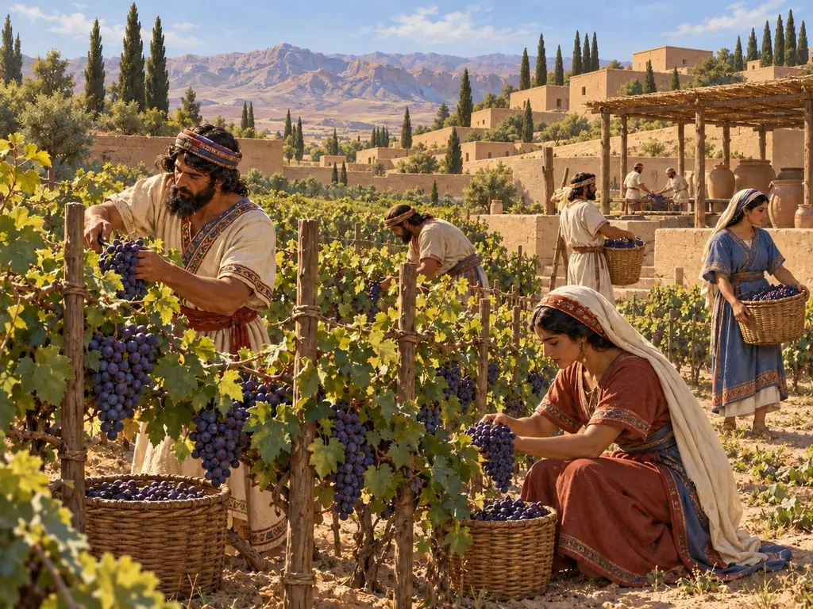
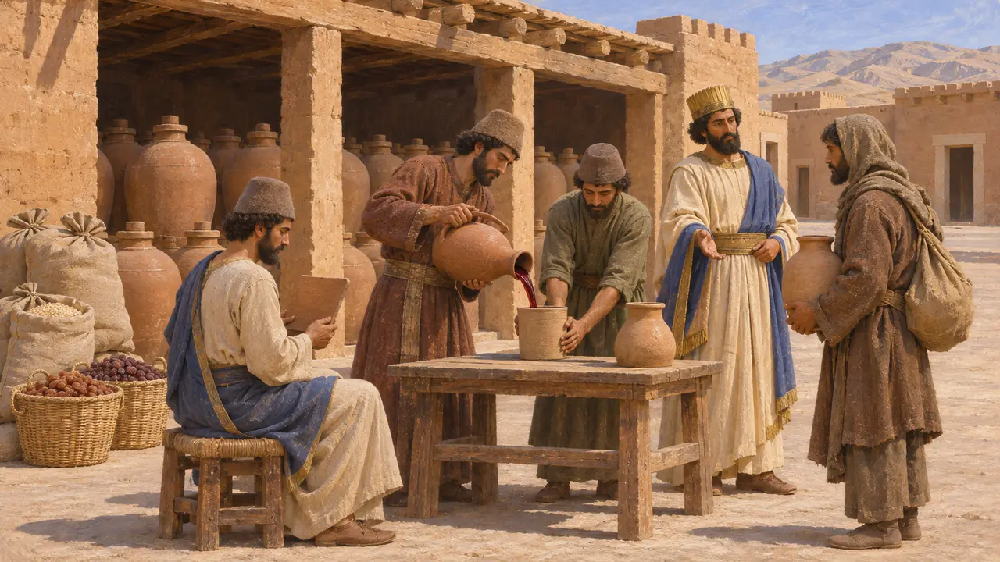
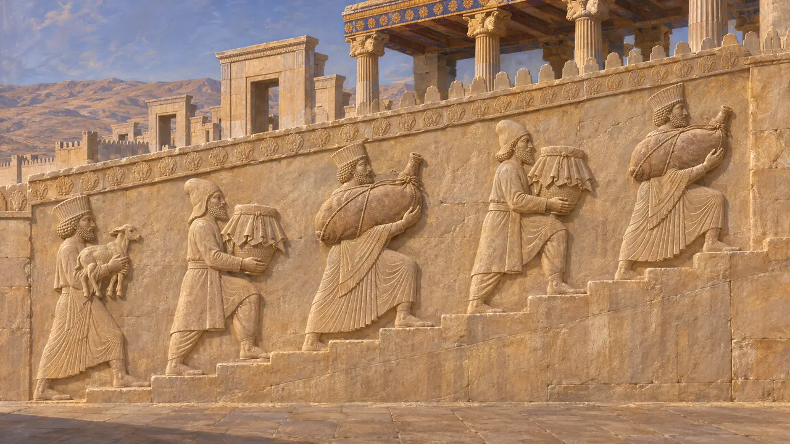
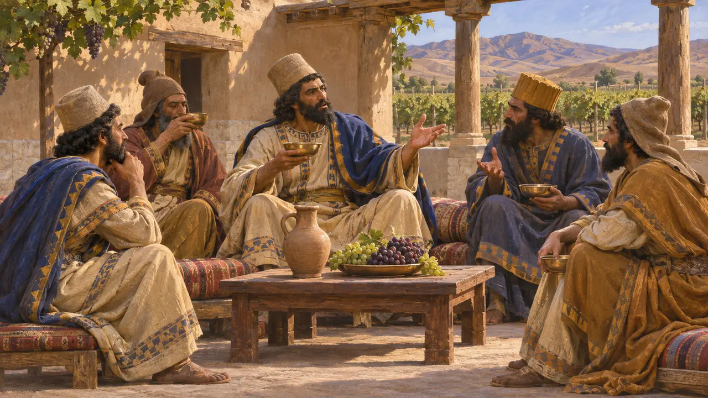
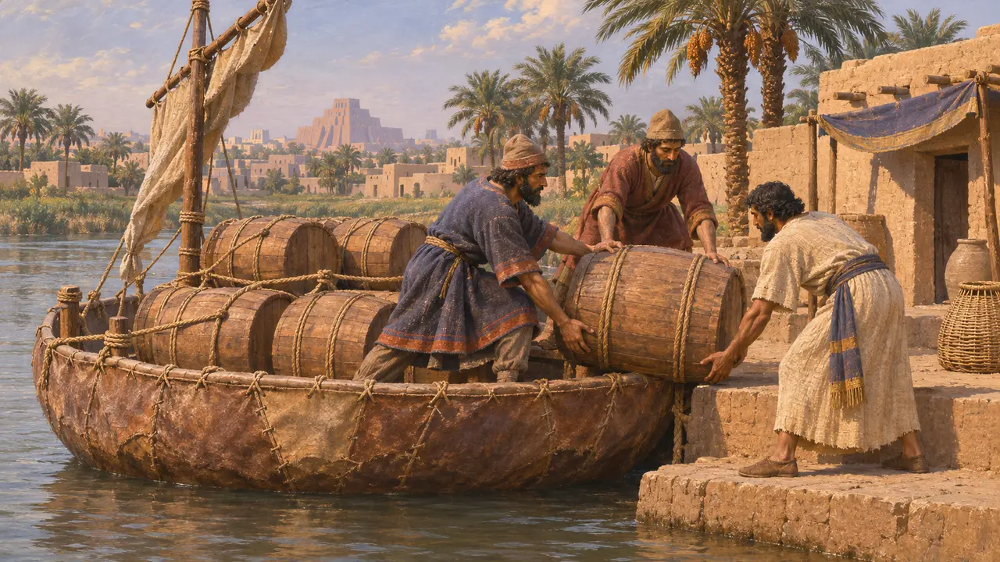
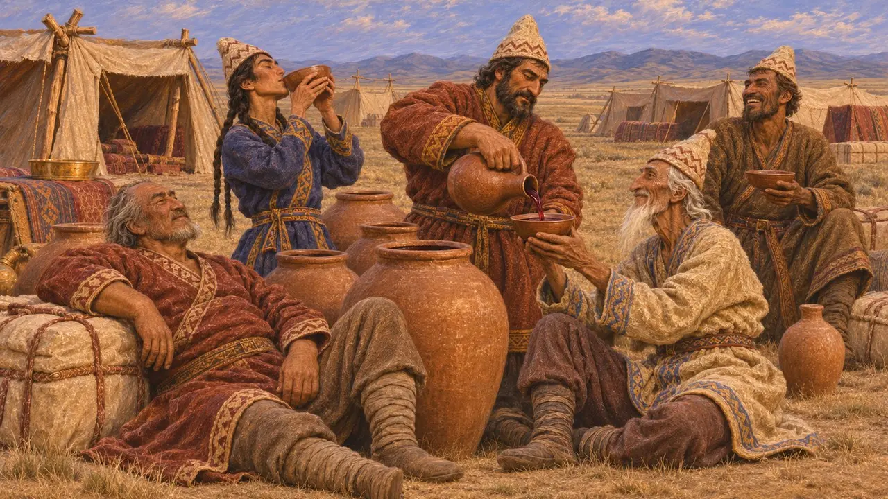

Bağ
Pers İmparatorluğu'nun malikânelerinde bağcılık ve şarapçılık, MÖ 6.-5. yüzyıl
Asma, Persis'in yaylalarında, Medya'da, Armenia'da, Suriye'de ve Anadolu'da yetiştirilirdi; şarap da kraliyet ambarlarının saydığı başlıca mallardan biriydi. Persepolis'teki idari tabletler, şarabın Kralın ekonomisinde ücret, yol azığı ve sunu olarak dolaştığını gösterir. Yunan yazarlar aşırı içki tüketimini Pers lüksünün bir işareti sayardı.
Oyunda: Oyundaki Bağ, asmaları direklere sarar, üzümleri sıkar ve şarabı Soylu Konakları için malikânede mayalandırır. Tabletlerde şarap yalnızca seçkinlere değil, bazı işçilere, yolculara ve tanrılara da verilirdi.

Persepolis tabletlerinde şarap
BelgelerdePersepolis'te yaklaşık 509 ile 493 yılları arasında yazılan Elamca Sur tabletleri, kraliyet depolarına toplanan ve yeniden dağıtılan şarabı kaydeder. Şarap memurlara, yollardaki yolculara, bazı işçi gruplarına ve kraliyet kadınlarının hanelerine verilirdi. Şarap, çeşitli tanrılara sunulan adaklar için dağıtılan mallar arasında da yer alır. Tabletler onu tahıl, bira ve meyveyle birlikte depolanıp hesabı tutulan, yönetilen bir mal olarak gösterir.
R. T. Hallock, Persepolis Fortification Tablets, 1969; W. Henkelman, The Other Gods Who Are, 2008

Persepolis'te şarap taşıyan hizmetkârlar
BelgelerdePersepolis'teki Dareios sarayının merdivenlerinde ve oradaki daha sonraki saray merdivenlerinde, taşa oyulmuş hizmetkârlar kraliyet odalarına doğru tırmanır. Ellerinde yavru hayvanlar, kapaklı kaplar ve şarap tulumları vardır; Kralın sofrası için yukarıya yiyecek ve içecek taşırlar. Kabartmalar bugün hâlâ yerinde durur ve tabletlerin çizdiği, şarapla beslenen bir saray tablosuyla örtüşür.
E. F. Schmidt, Persepolis I, 1953

Herodotos'ta Perslerin içki alışkanlığı
Antik anlatıHerodotos'a göre Persler şaraba çok düşkündü. Ciddi meseleleri sarhoşken tartıştıklarını, sonra ayıkken kararı yeniden gözden geçirdiklerini ya da tam tersini yaptıklarını ileri sürer. Yunan yazarlar Pers ziyafetlerini sıklıkla yumuşaklık ve aşırılık ima etmek için kullanırdı; bu yüzden bu betimleme Pers geleneği kadar Yunan tutumları hakkında da bir şey söyler.
Herodotus 1.133

Asmanın yetişmediği yerler
TartışmalıHerodotos, Babilonya'da asma yetişmediğini, halkın hurma şarabı içtiğini ve üzüm şarabının Armenia'dan, hurma ağacından fıçılarla yüklü teknelerle nehir yoluyla getirildiğini söyler. Mısır'da da asma olmadığını belirtir, ama başka bir yerde rahiplere üzüm şarabı verildiğinden söz eder. Mısır mezar resimleri ve etiketli şarap küpleri, Delta'da ve vahalarda bağların çok eskiden beri var olduğunu gösterir. Mısır ayrıca Yunanistan'dan ve Fenike'den küplerle şarap ithal ediyordu.
Herodotus 1.193-194; Herodotus 2.37; Herodotus 2.77; Herodotus 3.6

Uyarı ve tuzak olarak şarap
Geç dönem efsanesiHerodotos şarap üzerine iki ahlaki hikâye anlatır. Kroisos Kyros'a saldırmadan önce Sandanis adlı bir Lidyalı onu, Perslerin şarap değil su içtiğini ve ellerinden alınmaya değer hiçbir şeyleri olmadığını söyleyerek uyarmış. Daha sonra Kyros'un Massagetlere şarapla dolu bir ordugâh bıraktığı, onların da bu şarabı içip kılıçtan geçirildiği anlatılır. Her iki hikâye de olayları kaydetmek için değil, lüks ve yıkım üzerine bir ders vermek için kurgulanmıştır.
Herodotus 1.71; Herodotus 1.207-211
Kaynaklar
- R. T. Hallock, Persepolis Fortification Tablets, 1969
- W. Henkelman, The Other Gods Who Are, 2008
- Herodotus 1.133
- Herodotus 1.193-194
- Herodotus 2.77
- P. Briant, From Cyrus to Alexander, 2002